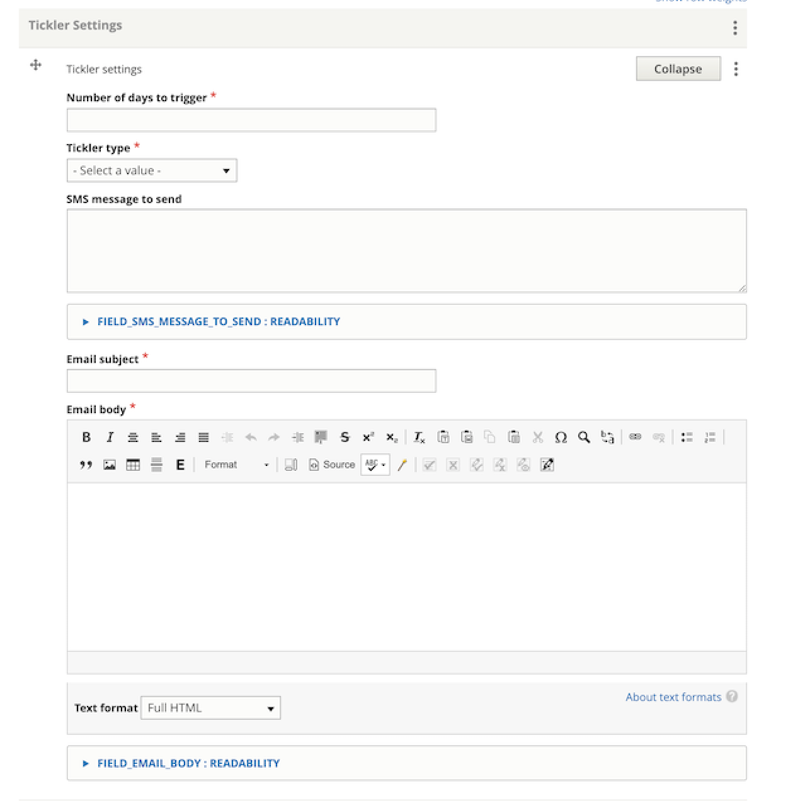

Tool Tickler System¶
Note
The tickler system is currently not active. We can create ticklers but nothing wil be sent out to users via SMS or email at this time.
Who Can Receive Tickler Messages¶
The tickler system allows for the sending of email or text messages to community members who:
- are working on a tool
- are logged in
- have notifications set to:
- text message AND have opted in to receive text messages
Configuring Tickler Messages¶
Ticklers can be added from the edit form of any tool step content.
A tool step can have multiple ticklers. Each tickler should have:
- the number of days to trigger and a tickler type. This will calculate when to send.
- an SMS message
- an email message
Users will receive only one of these.
Note
there is no automated additional text included in the messages sent. The tickler messages should be complete enough to provide context for a user who may have not been on the site recently.
Scheduling methodology¶
A tickler may be set based on the timestamp of the last step or the current step.
For example, a 3 step tool is set to:
- Step 2 is configured with a tickler set to 7 days after step 1 is completed
- Step 2 is configured with a tickler set to 7 days after step 2 is completed
- Step 2 is configured with a tickler set to 14 days after step 2 is completed
- Step 3 is configured with a tickler set to 7 days after step 2 is completed
- Step 3 is configured with a tickler set to 14 days after step 3 is completed
A user completes step 1 on 1/1/2021, step 2 on 1/9/2022, the user will receive ticklers:
- On 1/8/2021 from Step 2
- On 1/15/2021 from Step 2
- On 1/15/2021 from Step 3
- On 1/22/2021 from Step 2
- They won’t receive the final tickler message unless they complete step 3
Sample messages¶
Hello from ILAO! This is a reminder that you recently completed “Get your police records” from our criminal expungement tool. The next step is to [name of step]. https://www.illinoislegalaid.org/[link to next step].
Hello from ILAO! This is a reminder that you have an incomplete step in [name of tool]. https://www.illinoislegalaid.org/[link to next step].
Hello from ILAO! You recently completed our cannabis tool. We’d appreciate your feedback on your experience. https://www.surveymonkey.com/toolbox-survey.